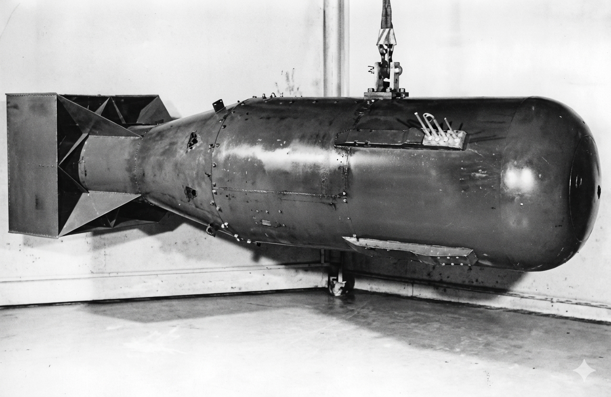
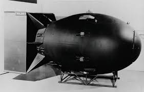

A Visual History of the Atomic Bomb
An educational, non-graphic exploration of the scientific, political, and cultural journey of the atomic age.
Start JourneyHow Nuclear Fission Gave Birth to the Atomic Age
In 1938, scientists in Germany discovered nuclear fission — the process by which the nucleus of a heavy atom splits into lighter nuclei, releasing tremendous energy.
This breakthrough transformed atomic theory from pure science into a real possibility for both energy and weapons. The discovery opened a new chapter for humanity — one defined by power unlike anything before.
Timeline — From Discovery to
Global Proliferation
1938 — Discovery of Nuclear Fission:
The discovery that the atomic nucleus can split, releasing vast energy, laid the foundational science for nuclear weapons.

Impact Perspective
- Total Destruction —
- Structural Damage —
- Minor Shockwave —

The First Detonation in Human History
On July 16, 1945, in the New Mexico desert, the United States conducted the world’s first atomic bomb test.
The First Use of Atomic Bombs in War
Hiroshima (Little Boy)

Nagasaki (Fat Man)

The Science That Shapes Our World
From early alchemy to modern laboratories, chemistry continues to change how we understand everything around us.